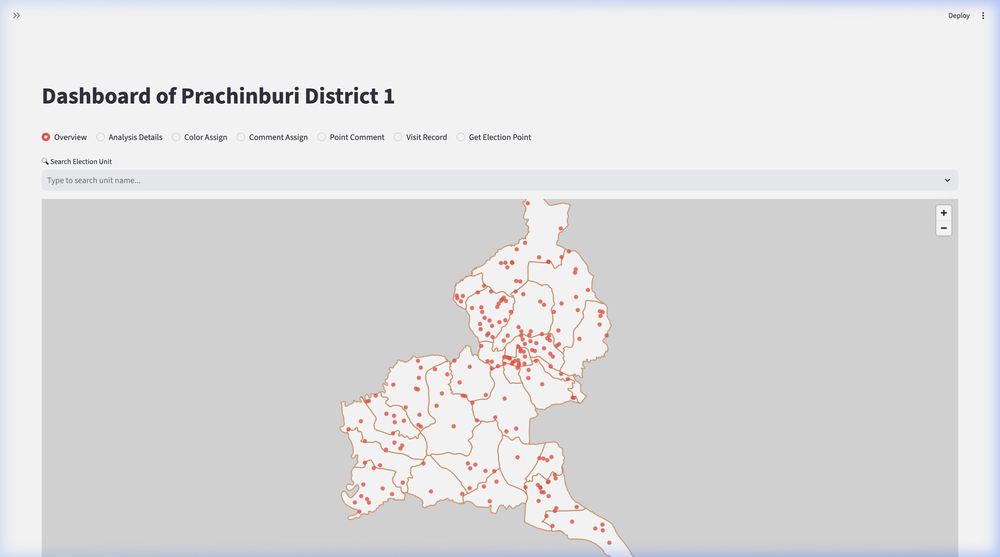
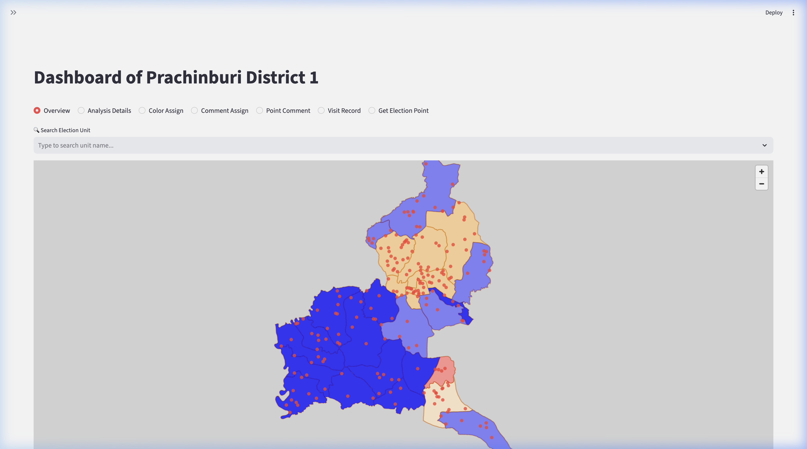
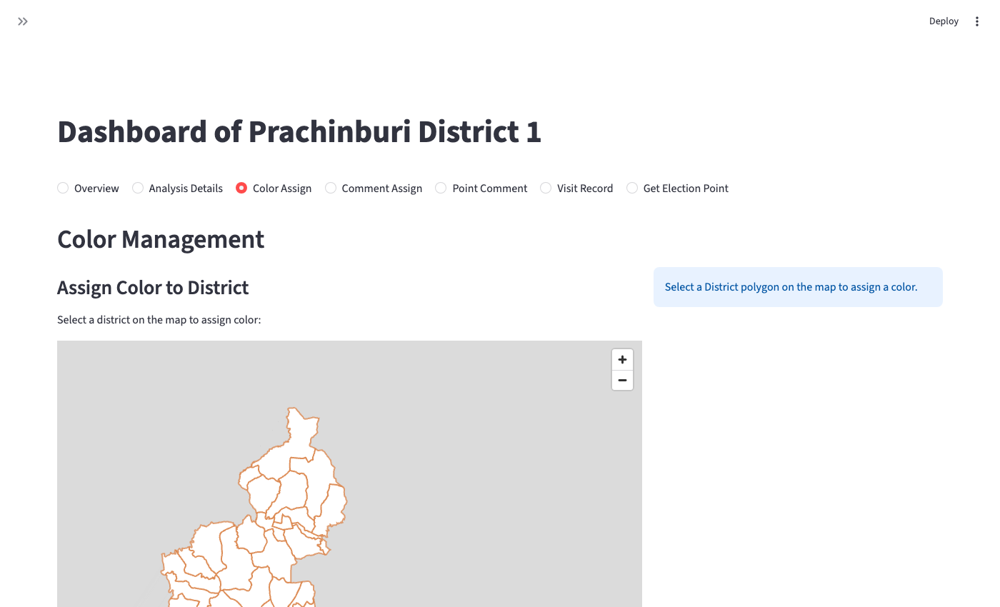
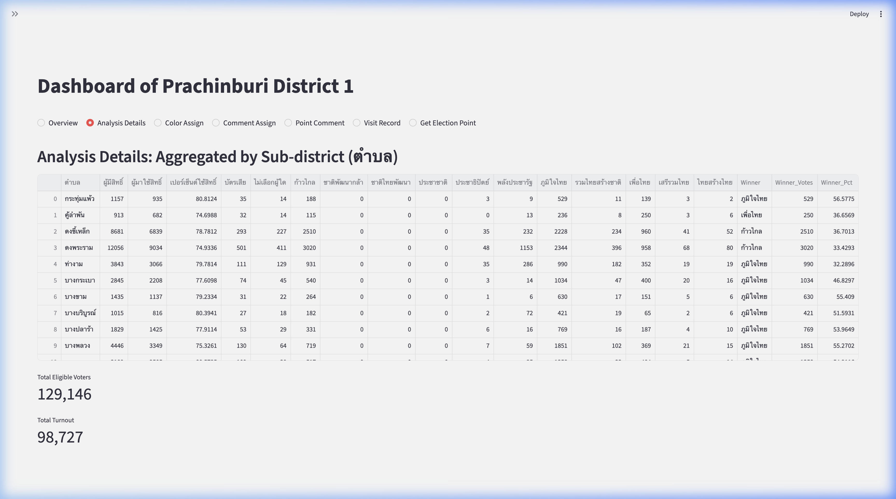
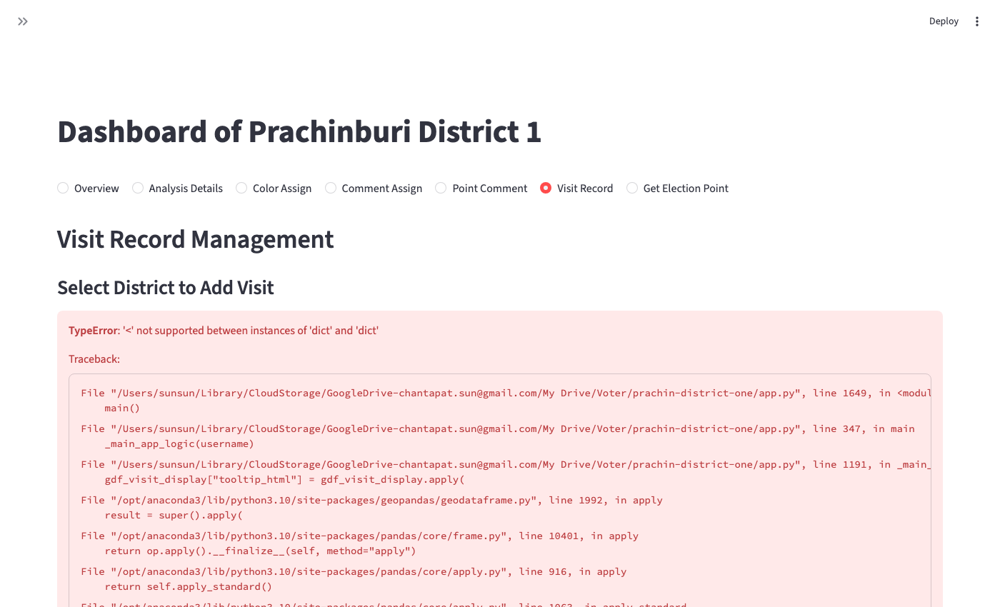

Prachinburi District 1
Campaign Dashboard
แดชบอร์ดวิเคราะห์ข้อมูลเลือกตั้ง · ปราจีนบุรี เขต 1
Streamlit
PyDeck
GeoPandas
Google Cloud Storage
Docker
The Challenge
Campaign teams need real-time spatial intelligence — not spreadsheets
📊
Scattered Data
Election results, polling stations, and field notes lived in separate files with no unified view.
🗺️
No Spatial Context
Voting patterns varied by geography but could not be visualized at the sub-district level.
📋
Manual Tracking
Field visit records and campaign pin locations were managed in paper or unstructured notes.
🔒
No Access Control
Sensitive data needed to be shared publicly for some users and restricted for others.
The Solution
A unified, interactive web dashboard with two access tiers
🛡️
Admin Dashboard
Full access: edit sub-district colors, add comments, manage visit records, upload KML overlays.
🌐
Public Read-Only App
Simplified view for public access — map + election results, no sensitive data exposed.
☁️
Cloud Persistence
Google Cloud Storage syncs all state (comments, visits, colors) across users in real time.
📱
Mobile Optimized
Responsive layout designed for field workers on phones, not just desktop browsers.
Interactive Map View

🗺️ Election unit points
📍 Campaign pin locations
🏘️ Sub-district boundaries
🔍 Search by unit name
Map: Winners Layer

🟠 ก้าวไกล (Orange)
🔵 ภูมิใจไทย (Blue)
🔴 เพื่อไทย (Red)
🏆 Winning party by sub-district
Map: Election Unit Points
📍 All polling station locations
🏘️ Sub-district boundaries
🔍 Searchable by unit name
Color Assignment

🎨 Assign strategic zones by color
🖱️ Click district on map to assign
🔄 Synced to GCS in real time
Analysis Details

🥇 Winner per sub-district
📈 Vote percentages
🗳️ Party breakdown
📊 129K eligible voters
Visit Record Management

📅 Thai date formatting
🖱️ Click-to-select on map
☁️ Synced via GCS
✏️ Add / edit / delete
Technology Stack
🐍
Python 3.9+
Core language
⚡
Streamlit
Web framework
☁️
Google Cloud Storage
Persistence layer
🐳
Docker
Containerization
System Architecture
Data SourcesCSV · KML · JSON
→
Streamlit Appapp.py / public_app.py
↔
Google Cloud StorageComments · Visits · Colors
Admin UserAuth via YAML · full write access
→
Docker Containerdeploy.sh / deploy_public.sh
→
Public UserRead-only · no login required
- KML boundary files parsed with
lxml and overlaid as GeoJSON polygon layers
- Authentication handled by
streamlit-authenticator with hashed passwords in YAML
- All mutable state (colors, visits, comments) round-trips through GCS for multi-session consistency
Key Outcomes
⚡
Faster Decision Making
Campaign team can identify strong/weak sub-districts at a glance instead of querying spreadsheets.
🎯
Targeted Campaigning
Color-coded sub-district assignments let team coordinators plan routes and resource allocation.
📡
Real-time Field Sync
Field staff update visit records from mobile; all team members see changes instantly via GCS.
🔓
Public Transparency
Separate public app allows voters to explore election results without exposing campaign internals.